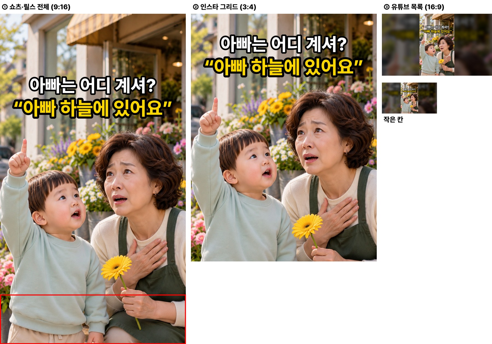
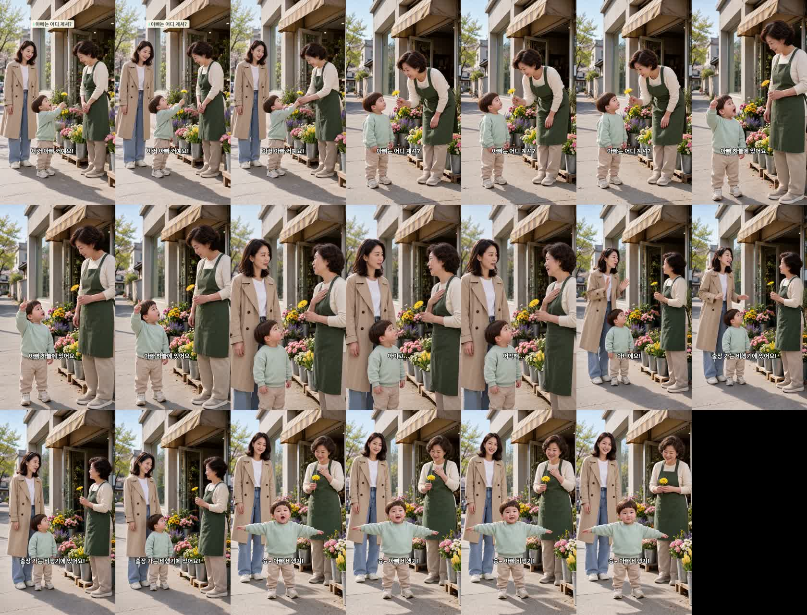

꽃집 사장님이 아빠는 어디 계시냐 묻자 두 살이 한 말
doyoon-flower-skydad-001 · R5 · 19.8초 · 6컷 · 출처 장치: 보육교사 커뮤니티 글 «우리 아빠는 하늘나라에 있어요!»(아버님 파일럿) — 후킹 먼저 방식 첫 편
후킹
«아빠 하늘에 있어요.» — 엄마가 아침에 «아빠 지금 비행기 타고 하늘에 있어»라고 한 말을 도윤이가 그대로 옮겼고, 사장님은 «돌아가셨다»로 알아듣습니다. 앞은 꽃 선물로 따뜻하게(인스타), 3~4컷 사장님이 얼어붙는 순간이 웃음(유튜브)입니다.
봐 주셔야 할 것
- 4번 사장님 표정 — «아이고… 어떡해…»에서 가슴에 손을 얹고 엄마를 봅니다. 놀람에 가깝고 슬픔은 약하게 나왔습니다. 오해가 충분히 전해지는지 봐 주세요.
- 배경 계절 — 꽃집 세트가 봄 사진(연두 잎·튤립)이라 옷은 가을인데 거리는 봄처럼 보입니다.
- 썸네일 — 흰 줄 «아빠는 어디 계셔?» + 노란 줄 «아빠 하늘에 있어요» · 하늘 가리키는 도윤이와 얼어붙은 사장님 투샷.
제작 중 고친 것
- 4·5·6번이 같은 카메라라 점프컷 → 4번은 어른 얼굴 높이, 6번은 도윤이 눈높이로 나눔.
- 3번 연기 «담담하게»가 도윤이 목소리 기준(밝고 크게)에 걸림 → «밝고 해맑게, 조금 크게».
- 5번 시작 그림에서 엄마·사장님이 옆모습이라 허브가 얼굴을 못 찾음 → 그 장만 다시 그림(엄마 얼굴 정면).
컷별 실측
| 컷 | 대사 | 받아쓰기 | 음높이 | 시선 |
|---|---|---|---|---|
| 1 | 도윤 «이거 아빠 거예요!» | 이거 아빠 거예요. | 340Hz | 도윤→사장님(꽃 내밂) |
| 2 | 사장님 «아빠는 어디 계셔?» | 아빠는 어디 계셔? | 188Hz | 사장님→도윤 |
| 3 | 도윤 «아빠 하늘에 있어요.» | 아빠 하늘에 있어요 | 356Hz | 도윤→사장님(하늘 가리킴) |
| 4 | 사장님 «아이고… 어떡해…» | 아이고 어떡해 | 181Hz | 사장님→엄마(가슴에 손) |
| 5 | 엄마 «아니에요! 출장 가는 비행기에 있어요!» | 아니에요. 출장 가는 비행기에 있어요. | 311Hz | 엄마→사장님(손사래) |
| 6 | 도윤 «슝~ 아빠 비행기!» | 슝! 아빠 비행기! | 372Hz | 도윤→사장님(두 팔 벌림) |
D6 시작 그림 이탈·컷 안 튐 검사 6컷 통과 · D8 통과 · H3 6회(약 $0.6)
썸네일 (세 화면)

완성본 1초 간격
